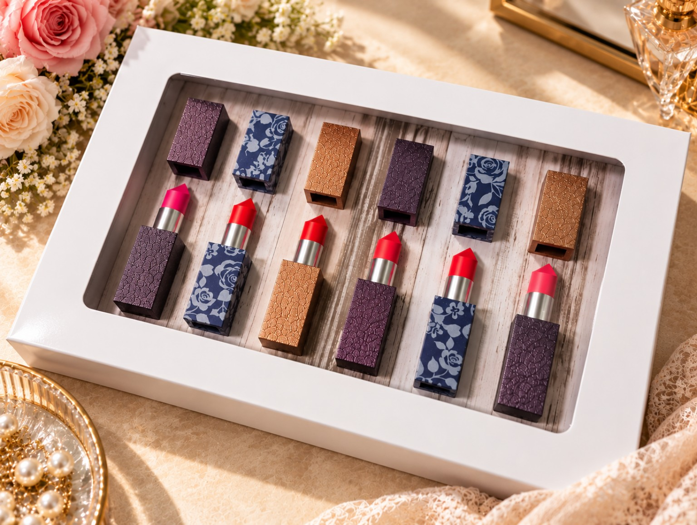
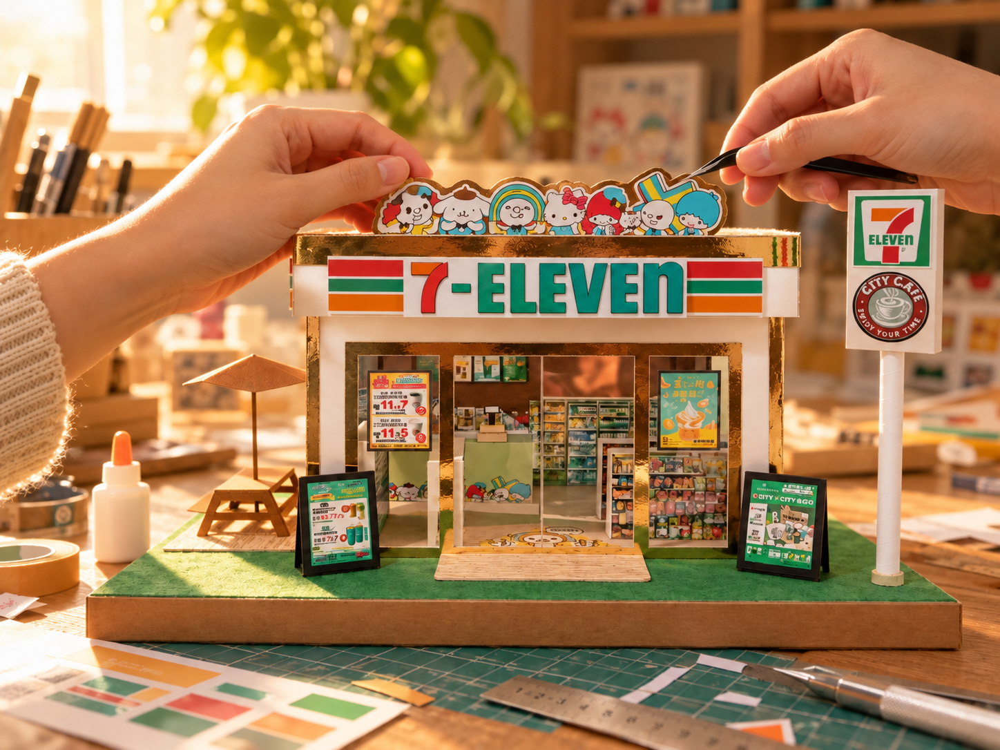
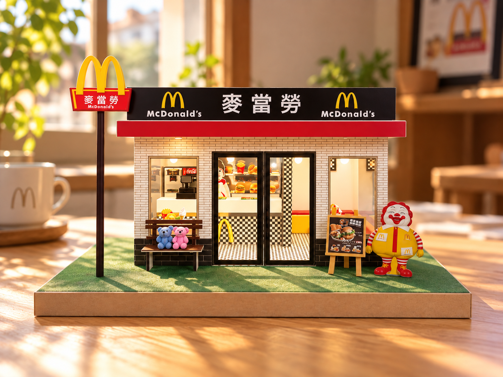
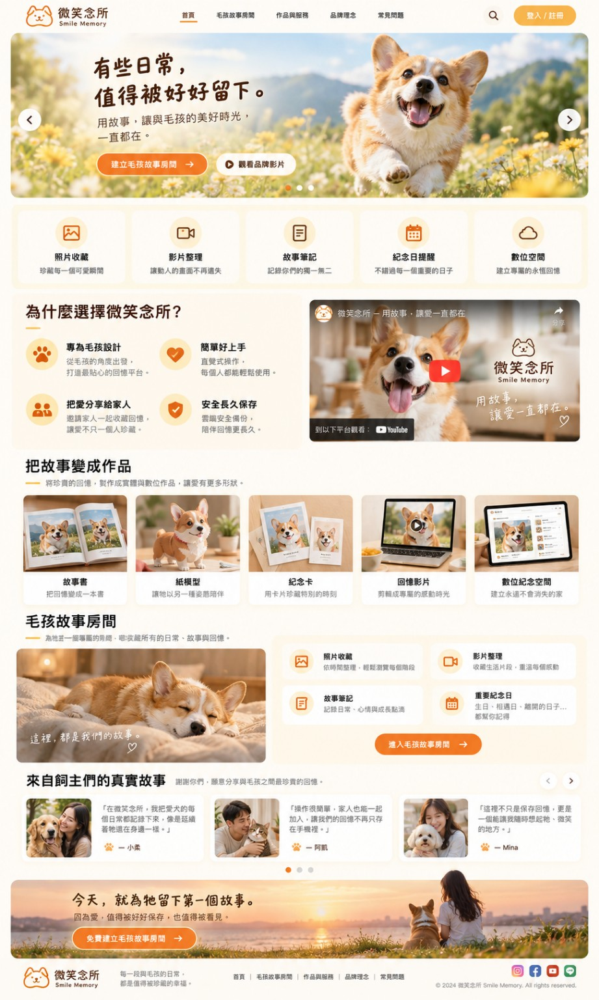
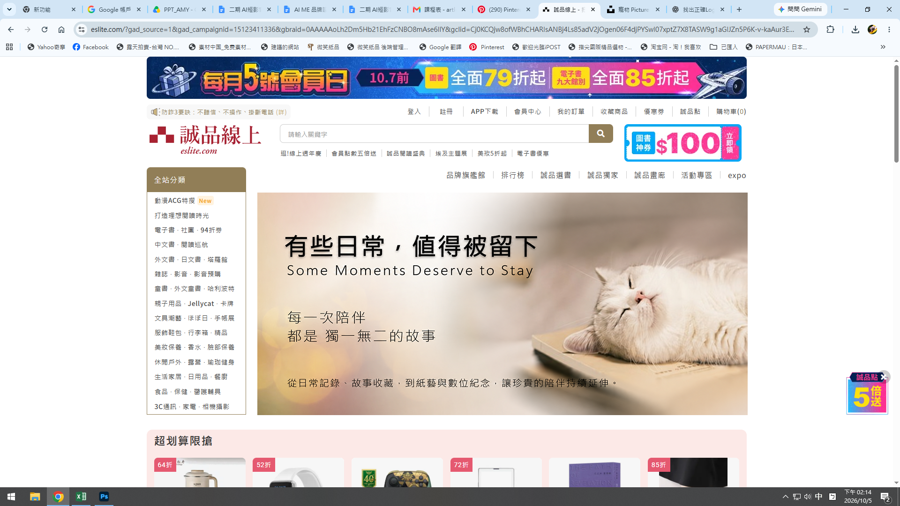
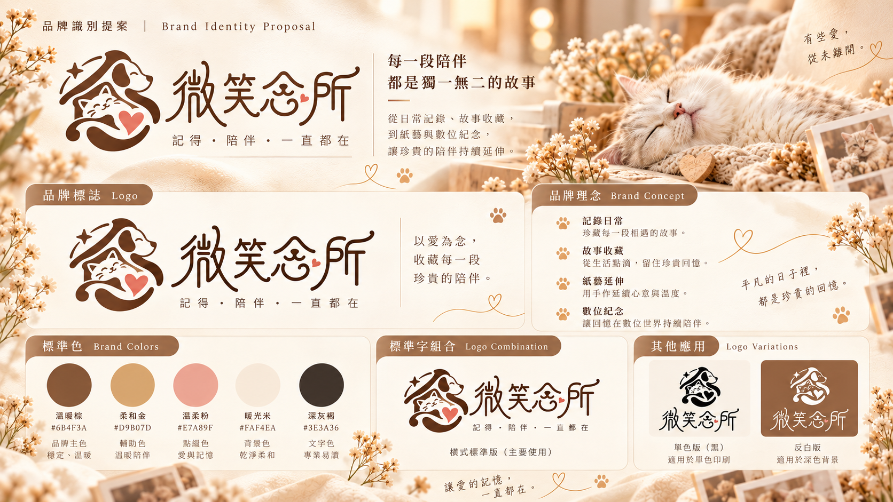

現代紙藝設計
紙藝設計/Illustrator
採用高對比純色，變換外包裝風格強調安穩兼顧生活創意精神。
DESIGN WITH WARMTH.

專注於「手做溫度」的產品設計師我是宛怡，喜歡在咖啡香與靈感交織的日常中，運用設計思維與 AI 工具，把腦中的點子轉化為有溫度的作品。 以創意為起點，結合設計與手作溫度，讓每件作品承載故事與感動。

採用高對比純色，變換外包裝風格強調安穩兼顧生活創意精神。

跳脫制式風格的大膽設計，可愛與創新中保留職人手作溫度無失真感的設計。

規劃寵物數位記錄網站，提供企劃與架構，再利用AI快速精準設定設計方向
從情感連結開始發想，運用現代AI科技技術創作懸疑詼諧風格，產生情感與超現實的激盪使人產生共鳴。

日常的睡姿也值得被留下，溫暖的圖片風格搭配不一樣的每一天

替寵物留下一個紀錄的數位空間為發想，在文字中加入動物元素，圖型LOGO巧妙將中文字與動物圖像做融合。
如果您需要極具生活溫度美感設計、高記憶點情感連結的視覺或數位產品，歡迎直接透過下方資訊聯繫，我準備好隨時接受挑戰。